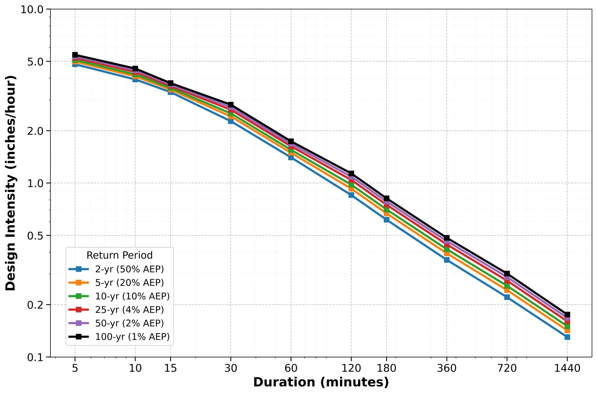
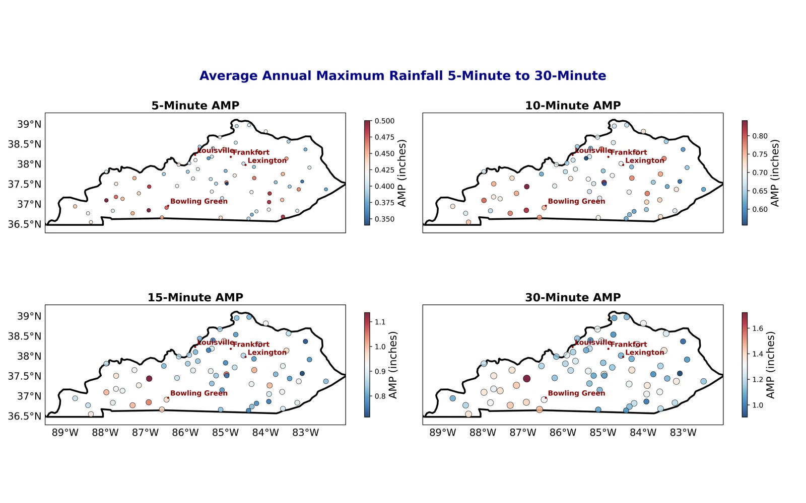

Revisiting Kentucky’s extreme rainfall estimates
Comparing high-frequency Kentucky Mesonet observations with NOAA Atlas 14 precipitation-frequency estimates.
- Network
- 66 stations
- Observations
- 5 minutes
- Durations
- 5–1,440 min
- Return periods
- 2–100 years
The question
How do recent station observations compare with established rainfall-frequency estimates?
This study uses quality-controlled Kentucky Mesonet observations to characterize short-duration precipitation extremes and compare intensity–duration–frequency statistics with NOAA Atlas 14.
Data & methods
A closer look at
the approach.
The analysis identifies annual maximum precipitation across durations, fits Gumbel-based frequency estimates, and compares six spatially matched station pairs. It evaluates rainfall intensity across durations and return periods while recognizing uncertainty associated with record length.
Findings & context
What the work shows.
- Quality-controlled observations from 66 stations support a statewide view of precipitation-frequency behavior.
- Intensity–duration–frequency estimates cover durations from five minutes to one day and return periods from two to 100 years.
- Paired Mesonet–Atlas 14 comparisons connect station observations with rainfall information used in flood-risk planning.
Under editorial review at the Journal of Applied and Service Climatology.
From the analysis
Research figures.
Select a figure to view it larger.

{kind=link}

{kind=link}
{kind=link}
